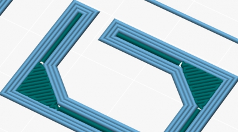
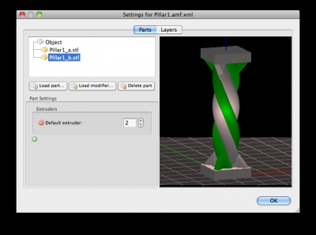
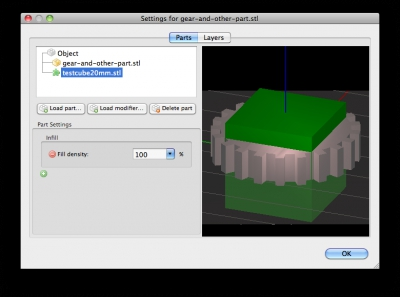

Release notes for 1.1.0 (2014-03-26)
This is an experimental release. Help us testing!
(thanks Josef Prusa for nagging about some of these features!)
-
New features:
- New algorithm for single-width thin walls, now faster and more accurate
- New algorithm for linear gap fill: no more shaking and adaptive extrusion width!
- New option for turning autocentering off in the plater
- Ability to set per-object and per-region settings
- New object editor window for composing multi-part objects (no need to use AMF files anymore)
- Support for modifier meshes to apply distinct local settings by intersecting them with the main model
- Import/export entire configuration bundles
- Per-region settings are now written to AMF files and read back in (they could be even assigned from a CAD)
- New option for generating internal interface shells between multi-part objects (useful for translucent objects or manually-designed support material)
- New pillars support material for saving time and material and easier removal
Improvements:
- Huge internal refactoring for better modularity and less memory usage
- More detailed thumbnails in plater
- Prevent user from saving a preset named “- default -” which could lead to confusion
- Real-time validation for most config options
Changes:
- The Spiral Vase option is now more strict because it will require user to set other options in a compatible way for it to work. This might change again in the future.
- The Fill Density option is now expressed as a percentage and uses a combobox
Known issues:
- On Windows, some changes to configuration are ignored and not saved. It happens very randomly so it’s hard to fix, but it’s a high priority issue
Linear gap fill:

Object editor:

Modifier meshes:

Pillars support material